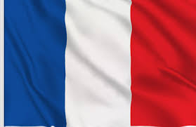
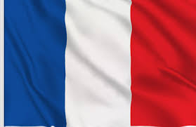

Bernard Léa
lbernard@la-providence.net
18 year old
woman
| 2020/2021 | first year of two year technical degree of system digital in high school La Providence(Amiens) |
| jun 2020 | high school diploma BTEC national diploma in system data digital in high school of Marie Curie in (Nogent-sur Oise) |
| 2017 | technical school certificate at the college Cousteau in Breuil le Vert |
| 2017 | Oberservation internship of year 10 in the Fab Lab at Clermont | |
| 2019 | Participation in the InnovaTech challenge in collaboration with the association "Elles bougent" for the creation of a connected plate (1st prize of the jury at Picardy level and 4th place at national) | |
| 2019 | period military period in the 40th Signal Regiment in Thionville (57) | |
| 2020 | Operational military reserve at the 41st Signal Regiment in Douai (59) |
| language: | : english read,write,speak (niveau B2) | |
| spanish: read,write,speak (niveau B1) | ||
| hobbie: | combat sports ,VTT and team sports |